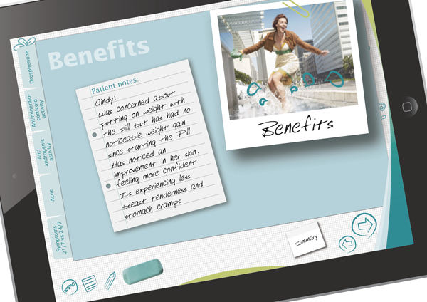
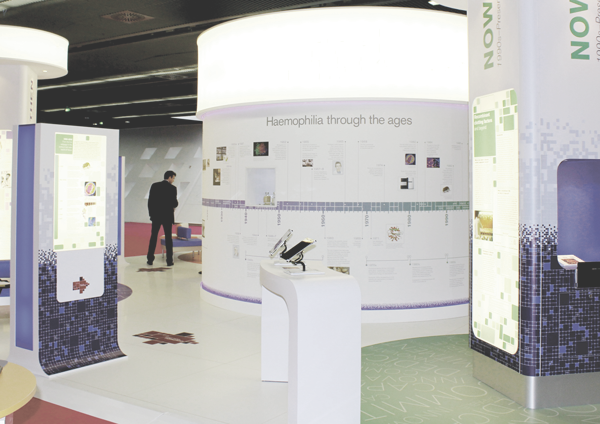

I'm an enthusiast and creative digital developer with 6 years of professional experience. Very passionate about web technologies, I am familiar with several developement strategies, like Mobile First design or Progressive Enhancement and responsive frameworks. Cross-browser and cross-devices testing is a foundemental part of my workflow.
Post gradueated with a Master of Science in Cognitive Science applied to Media Technology - Medialogy - I nutrish a vivid interest in UX, User Centered design, Interaction Design and Ethical Design.
AS&K Communication
My daily responsabilities include:
StreamUK Media Media Services
Responsabilities:
Teoriundervisning ApS - Copenhagen (Denmark)
HTML5
CSS3
Javascript
UX
Photoshop
Illustrator
Wordpress
Aalborg University Copenhagen (Denmark)
2 Years Course
Medialogy was based on studies of human and computational perception, audio-visual effects, animation and computer games, immersive systems and ubiquitous computing.
It was focused on education and research, which combined technology and creativity as means to design new processes and tools for art, design and entertainment.
Universita' degli Studi di Bari (Italy)
3 Years Course - First Class Honours
This education aims to convey theoretical and practical knowledge related to Computer Science and Communication delivered through new digital media. Subject of study are related to design, development and management of IT and multimedia technologies applied to several industries such as e-Commerce, Advertising, Printed and Digital Media.
Due to copyright restrictions and client confidentiality, I am able to show only part of my work on this website.

Bayer e-Detailers

International Society on Thrombosis and Haemostasis Conference 2013 - Interactive Touch Screens
Bayer e-Learning Platforms